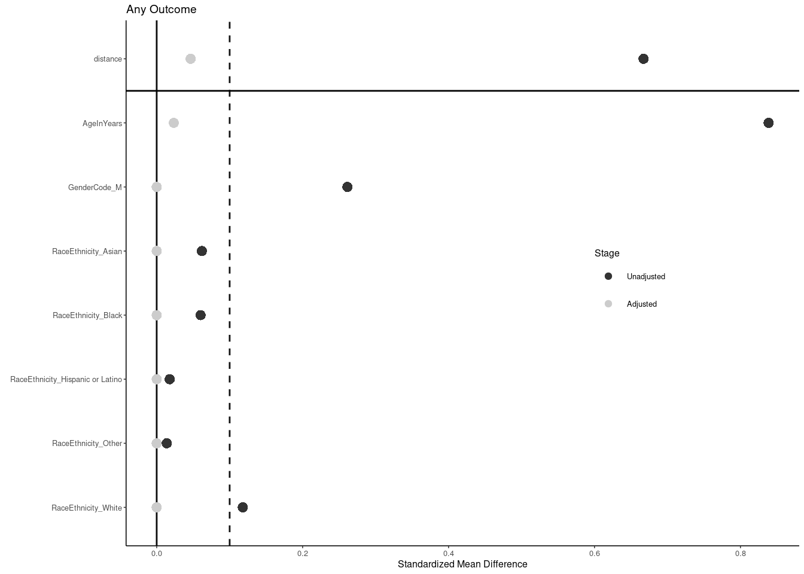

Propensity Mapped Comparison Between Cases and Controls
Author
Dave Bridges and Trey Carr
Published
April 9, 2025
Show the code
# hide this code chunk#| echo: false#| message: false# defines the se functionse <-function(x) {sd(x, na.rm =TRUE) /sqrt(length(x))}#load these packages, nearly always neededlibrary(tidyverse)# sets maize and blue color schemecolor_scheme <-c("#00274c", "#ffcb05")
Purpose
To create a propensity mapped subgroup for lab results.
Data Entry
Show the code
case.demographics.filename <-'CaseDemographics.csv'control.demographics.filename <-'ControlDemographics.csv'case.lab.results.filename <-'LabResults.csv'control.lab.results.filename <-'../controls/LabResults.csv'bp.filename.cases <-'NursingStandardVitalSigns.csv'bp.filename.controls <-'../controls/NursingStandardVitalSigns.csv'case.encounter.datafile <-"EncounterAll.csv"case.encounter.bmi.datafile <-"EncounterAnthropometricsBMI.csv"control.encounter.datafile <-"../controls/EncounterAll.csv"control.encounter.bmi.datafile <-"../controls/EncounterAnthropometricsBMI.csv"library(readr)library(dplyr)#labs dont have dates/agescase.encounters <-read_csv(case.encounter.datafile)case.encounters.bmi <-read_csv(case.encounter.bmi.datafile)case.encounters.all <-left_join(case.encounters,case.encounters.bmi,by =join_by(DeID_PatientID, DeID_EncounterID))control.encounters <-read_csv(control.encounter.datafile)control.encounters.bmi <-read_csv(control.encounter.bmi.datafile)control.encounters.all <-left_join(control.encounters,control.encounters.bmi,by =join_by(DeID_PatientID, DeID_EncounterID))case.demographics <-read_csv(case.demographics.filename)control.demographics <-read_csv(control.demographics.filename)case.labs <-read_csv(case.lab.results.filename) |>left_join(case.encounters.all, by =join_by(DeID_PatientID, DeID_EncounterID)) |>#added encounter infoleft_join(case.demographics, by="DeID_PatientID") # added demographic datacontrol.labs <-read_csv(control.lab.results.filename) |>left_join(control.encounters.all, by =join_by(DeID_PatientID, DeID_EncounterID)) |>#added encounter infoleft_join(control.demographics, by="DeID_PatientID") # added demographic data#remove large objects not needed further#rm(control.encounters,control.encounters.all,control.encounters.bmi)#combined into one datasetlibrary(lubridate)#this is used to filter for the window between when a lab result is allowable relative to the procedure.procedure.result.interval <-30lab.results <-bind_rows(control.labs |>mutate(Cushings=0), case.labs |>mutate(Cushings=1)) |>#combined, new column indicating cushingsmutate(cushings_procedure =ymd(cushings_procedure),DeID_AdmitDate =mdy_hm(DeID_AdmitDate)) |>mutate(TimePoint =case_when(cushings_procedure<= DeID_AdmitDate ~"Before", cushings_procedure > DeID_AdmitDate ~"After",.default="Unknown")) %>%# defined each encounter as before or aftermutate(ProcedureFollowUp = cushings_procedure - DeID_AdmitDate) #used to define point between the lab result and the procedure.#filtered out lab results outside of our intervallab.results.filtered <- lab.results |>filter(ProcedureFollowUp<procedure.result.interval |is.na(ProcedureFollowUp)) |>filter(TimePoint!="After")#filtered out if the age, gender, race, ethnicity was NA for a patient.complete.data.race.ethnicity.age <- lab.results.filtered |>filter(!if_any(c(AgeInYears, GenderCode, RaceCode, EthnicityCode), is.na)) #removed if they had missing data for age, gender, race or ethnicity#this is the complete dataset complete.data <- complete.data.race.ethnicity.age |>mutate(RaceEthnicity =case_when(EthnicityCode=="HL"~"Hispanic or Latino", RaceCode=="C"~"White", RaceCode=="AA"~"Black", RaceCode=="A"~"Asian",.default="Other")) #defined race/ethnicity categories#number of controls per casefold <-10
Note the controls dont have ages or BMIs because it depends on when the lab results were obtained, so had to merge in with encounter data.
Participant Inclusion Data
We began with 70327 controls who had lab data, and 441 cases with Cushing’s Disease.
Had Laboratory Results: We also removed 162 lab results from Cushing’s patients because they were outside of our acceptable window of 30 days before their procedure. This eliminated a total of 2 Cushings patients from our dataset.
Missing Demographic Data After filtering out missing demographic data we had 363 cases and 70070 controls with lab results. The specific pieces of missing information are found here:
Show the code
lab.results.filtered |>filter(Cushings==1) |>#only for cushings datagroup_by(DeID_PatientID) %>%summarise(Age_na =sum(is.na(AgeInYears)),Gender_na =sum(is.na(GenderCode)),Race_na =sum(is.na(RaceCode)),Ethnicity_na =sum(is.na(EthnicityCode)),Any_na =any(is.na(AgeInYears) |is.na(GenderCode) |is.na(RaceCode) |is.na(EthnicityCode))) |>ungroup() |>pivot_longer(cols =ends_with("_na"),names_to ="field",values_to ="has_na") |>filter(has_na!=0) %>%count(field, name ="n_patients_with_NA")-> missing.demographic.summarylibrary(knitr)missing.demographic.summary |>arrange(desc(n_patients_with_NA)) |>kable(caption="Summary of exclusions from Cushing's patient pool due to missing demographic data")
Summary of exclusions from Cushing’s patient pool due to missing demographic data
field
n_patients_with_NA
Any_na
78
Ethnicity_na
74
Gender_na
16
Race_na
16
Age_na
10
Our final dataset therefore included 363 Cushing’s patients, and we had the ability to draw from 70070 Cushing’s patients control patients.
Propensity Mapping
Used the R package mapit to match based on Age, Gender, Race, and Ethnicity. We wanted exact matches for everything except age, where we wanted the closest case that had a measurement. We picked 10 matched controls for each case
write_csv(master.summary.table,"Demographic Summary - Master Sample.csv")#statistics for BMImaster.data |>group_by(Cushings) |>summarize(shapiro.p=shapiro.test(sample(BMI,3000,replace=T))$p.value) |>kable(caption="Shapiro Wilk test for BMI for entire sample", digits=c(1,99)) |>kable_styling(full_width =FALSE, position ="center")
Shapiro Wilk test for BMI for entire sample
Cushings
shapiro.p
0
2.432753e-35
1
1.233253e-59
Show the code
library(broom)wilcox.test(BMI~Cushings,master.data) |>tidy() |>kable(caption="Mann Whitney test for effect of Cushing's on BMI for entire sample",digits=c(1,99,1,1)) |>kable_styling(full_width =FALSE, position ="center")
Mann Whitney test for effect of Cushing's on BMI for entire sample
statistic
p.value
method
alternative
1010764
2.024351e-27
Wilcoxon rank sum test with continuity correction
two.sided
Show the code
chisq.test(x=as.numeric(separate(master.summary.gender, `Cushing's`, sep=" ", into=c("n","Pct")) |>pull(n)),p=c(0.5,0.5)) |>tidy() |>kable(caption="Chi-squared test for equal proportions of males and females in the master sample",digits=c(1,99,1,1)) |>kable_styling(full_width =FALSE, position ="center")
Chi-squared test for equal proportions of males and females in the master sample
Prior to matching for Race and Ethnicity, we noted that participants with Cushing’s disease were more likely to identify as Non-Hispanic White (87.1794872% than the overall Michigan Medicine participant population (75.3532182% Non-Hispanic White, p=3.9688951^{-7})
Correspondingly, participants with Cushing’s disease were less likely to identify as Asian (p=1.870811^{-5}) or Black. (p=0.0181936).
As we expected, participants with Cushing’s disease had a higher BMI than the controls, with 64.3258427% of participants with Cushing’s disease having a BMI above 30 kg/m2, compared to only 39.7880764% controls (p=4.4237462^{-20}).
Stratified Demographics for the Entire Population
Show the code
# first check for normality of Age and BMImaster.data |>group_by(Obesity,Cushings)|>summarize(Age =shapiro.test(sample(AgeInYears,3000,replace=T))$p.value,BMI =shapiro.test(sample(BMI,3000,replace=T))$p.value,n=length(Cushings)) -> master.data.distmaster.data.dist |>kable(caption="Shapiro-Wilk Tests for Distribution of Quantitative Variables",digits=c(1,1,99,99,1))|>kable_styling(full_width =FALSE, position ="center")
Shapiro-Wilk Tests for Distribution of Quantitative Variables
Obesity
Cushings
Age
BMI
n
Non-Obese
0
1.565222e-29
1.023297e-20
5171
Non-Obese
1
1.942181e-19
2.221119e-37
127
Obese
0
2.458047e-24
1.148004e-44
3417
Obese
1
2.130490e-17
6.374958e-72
229
Show the code
#kruskal wallis testst since they are not normally distributedmaster.quant.kw <- master.data |>mutate(ObesityCushings=paste0(Obesity,Cushings)) |>summarize(BMI.kw=kruskal.test(BMI~ObesityCushings)$p.value,Age.kw=kruskal.test(AgeInYears~ObesityCushings)$p.value)master.2x2.quant.summary <- master.data |>group_by(Obesity, Cushings) |>summarize_at(.vars =c('AgeInYears', 'BMI'),.funs =list(mean = mean, sd = sd,n=length)) |>mutate(Age =paste0(round(AgeInYears_mean, 2), " +/- ", round(AgeInYears_sd, 2)),BMI =paste0(round(BMI_mean, 2), " +/- ", round(BMI_sd, 2)),n =as.character(BMI_n)) |>select(Obesity, Cushings, BMI, Age,n) |>ungroup() |>pivot_longer(cols =c(n, BMI, Age),names_to ="Variable",values_to ="Value" ) %>%# Create group column combining Obesity and Cushingsmutate(group =paste(Obesity, Cushings, sep ="_")) %>%# Pivot wider to spread group into columns, keeping Variable as row identifierpivot_wider(id_cols = Variable, # Explicitly specify Variable as the row identifiernames_from = group,values_from = Value,names_sort =TRUE ) |>mutate(p.value=c(NA,as.numeric(master.quant.kw))) |>rename("Control, BMI < 30"=`Non-Obese_0`,"Cushing's, BMI < 30"=`Non-Obese_1`,"Control, BMI > 30"=`Obese_0`,"Cushing's, BMI > 30"= Obese_1)# Create the group column (replacing hyphen with underscore for clean column names)master.data <- master.data %>%mutate(group =paste(gsub("-", "_", Obesity), Cushings, sep ="_"))# Define the categorical variables to iterate overcat_vars <-c("GenderName", "RaceEthnicity")# Initialize an empty list to store tables for each variablemaster.tables_list <-list()# Loop over each categorical variablefor (var in cat_vars) {# Compute counts counts_df <- master.data %>%group_by(!!sym(var), group) %>%summarise(count =n(), .groups ="drop") %>%# Pivot to wide formatpivot_wider(names_from = group,values_from = count,values_fill =0,names_sort =TRUE ) %>%rename(Variable =!!sym(var))# Calculate group-wise (column-wise) percentages counts_df <- counts_df %>%mutate(across(c(Non_Obese_0, Non_Obese_1, Obese_0, Obese_1),~sprintf("%d (%.1f%%)", .x, .x /sum(.x, na.rm =TRUE) *100),.names ="{.col}"))# Calculate total count for sorting (sum of numeric part of formatted strings) counts_df <- counts_df %>%mutate(total_count =rowSums(sapply(select(., Non_Obese_0, Non_Obese_1, Obese_0, Obese_1),function(x) as.numeric(gsub(" .*", "", x))) )) %>%# Sort by total count in descending orderarrange(desc(total_count)) %>%# Select desired columnsselect(Variable, Non_Obese_0, Non_Obese_1, Obese_0, Obese_1)# Compute chi-squared test p-value cont_table <-table(master.data[[var]], master.data$group) chi_test <-chisq.test(cont_table) p_val <- chi_test$p.value# Add p-value to the first row counts_df <- counts_df %>%mutate(p.value =if_else(row_number() ==1, p_val, NA_real_))# Add to list master.tables_list[[var]] <- counts_df}# Combine all variable tables into onemaster.2x2.counts.table <-bind_rows(master.tables_list) |>rename("Control, BMI < 30"=`Non_Obese_0`,"Cushing's, BMI < 30"=`Non_Obese_1`,"Control, BMI > 30"=`Obese_0`,"Cushing's, BMI > 30"= Obese_1)master.2x2.table <-bind_rows(master.2x2.quant.summary, master.2x2.counts.table) kable(master.2x2.table,caption="Summary of stratified variables") |>kable_styling(full_width =FALSE, position ="center")
For example, among participants with a \(BMI > 30 mg/m^2\), participants with Cushing’s disease had a higher BMI than controls (p=2.4556526^{-4}).
Females with Cushing’s disease were more likely to have a BMI over 30 kg/m2 (67.6056338% of females with Cushing’s disease had a \(BMI>30\)) than males (51.3888889%), p=0.015186).
Among participants with Cushing’s disease, Asian (75%) and Hispanic or Latino (60%) participants were more likely have a BMI under 30 kg/m2 compared to the overall average (35.6741573%, p=0.0265181 and 0.176412 respectively).
The average age of participants with Cushing’s disease with or without obesity was similar.
write_csv(hba1c.summary.table,"Demographic Summary - HbA1c Sample.csv")#statistics for BMIhba1c.data |>group_by(Cushings) |>summarize(shapiro.p=shapiro.test(sample(BMI,3000,replace=T))$p.value) |>kable(caption="Shapiro Wilk test for BMI for HbA1c sample", digits=c(1,99)) |>kable_styling(full_width =FALSE, position ="center")
Shapiro Wilk test for BMI for HbA1c sample
Cushings
shapiro.p
0
3.904457e-40
1
1.711997e-29
Show the code
wilcox.test(BMI~Cushings,hba1c.data) |>tidy() |>kable(caption="Mann Whitney test for effect of Cushing's on BMI for HbA1c sample",digits=c(1,99,1,1)) |>kable_styling(full_width =FALSE, position ="center")
Mann Whitney test for effect of Cushing's on BMI for HbA1c sample
statistic
p.value
method
alternative
853
0.002801628
Wilcoxon rank sum test with continuity correction
two.sided
Show the code
chisq.test(x=as.numeric(separate(hba1c.summary.gender, `Cushing's`, sep=" ", into=c("n","Pct")) |>pull(n)),p=c(0.5,0.5)) |>tidy() |>kable(caption="Chi-squared test for equal proportions of males and females in the HbA1c sample",digits=c(1,99,1,1)) |>kable_styling(full_width =FALSE, position ="center")
Chi-squared test for equal proportions of males and females in the HbA1c sample
library(knitr)hba1c.summary %>%kable(caption="Summary of Hb1ac levels by obesity and pre-existing Cushing's")
Summary of Hb1ac levels by obesity and pre-existing Cushing’s
Cushings
Obesity
mean
se
sd
n
0
Non-Obese
5.501020
0.0616673
0.6104747
98
0
Obese
5.870370
0.1225683
1.1031143
81
1
Non-Obese
6.450000
0.4856267
0.9712535
4
1
Obese
7.307692
0.5129679
1.8495322
13
Show the code
library(broom)lm(value ~ Cushings + Obesity + Cushings:Obesity,data=hba1c.data) |>tidy() |>kable(caption="2x2 ANOVA with Interaction for effects of Obesity and Cushings on Hba1c")
2x2 ANOVA with Interaction for effects of Obesity and Cushings on Hba1c
term
estimate
std.error
statistic
p.value
(Intercept)
5.5010204
0.0970926
56.6574481
0.0000000
Cushings
0.9489796
0.4902937
1.9355328
0.0543938
ObesityObese
0.3693500
0.1443345
2.5589854
0.0112683
Cushings:ObesityObese
0.4883423
0.5682062
0.8594456
0.3911665
Show the code
lm(value ~ Cushings + ObesityIII + Cushings:ObesityIII,data=hba1c.data) |>tidy() |>kable(caption="2x2 ANOVA with Interaction for effects of Class III Obesity and Cushings on Hba1c")
2x2 ANOVA with Interaction for effects of Class III Obesity and Cushings on Hba1c
term
estimate
std.error
statistic
p.value
(Intercept)
5.5748428
0.0721782
77.237240
0.0000000
Cushings
0.7651572
0.2967216
2.578704
0.0106656
ObesityIIIClass III Obese
0.8351572
0.2159322
3.867683
0.0001504
Cushings:ObesityIIIClass III Obese
1.0248428
0.4977902
2.058784
0.0408651
Show the code
lm(value ~ Cushings + BMI + Cushings:Obesity,data=hba1c.data) |>tidy() |>kable(caption="2x2 ANOVA with Interaction for effects of Obesity and BMI on Hba1c")
2x2 ANOVA with Interaction for effects of Obesity and BMI on Hba1c
write_csv(glucose.summary.table,"Demographic Summary - Glucose Sample.csv")#statistics for BMIglucose.data |>group_by(Cushings) |>summarize(shapiro.p=shapiro.test(sample(BMI,3000,replace=T))$p.value) |>kable(caption="Shapiro Wilk test for BMI for Glucose sample", digits=c(1,99)) |>kable_styling(full_width =FALSE, position ="center")
Shapiro Wilk test for BMI for Glucose sample
Cushings
shapiro.p
0
4.215606e-32
1
5.959082e-65
Show the code
wilcox.test(BMI~Cushings,glucose.data) |>tidy() |>kable(caption="Mann Whitney test for effect of Cushing's on BMI for Glucose sample",digits=c(1,99,1,1)) |>kable_styling(full_width =FALSE, position ="center")
Mann Whitney test for effect of Cushing's on BMI for Glucose sample
statistic
p.value
method
alternative
1892988
2.366542e-26
Wilcoxon rank sum test with continuity correction
two.sided
Show the code
chisq.test(x=as.numeric(separate(glucose.summary.gender, `Cushing's`, sep=" ", into=c("n","Pct")) |>pull(n)),p=c(0.5,0.5)) |>tidy() |>kable(caption="Chi-squared test for equal proportions of males and females in the Glucose sample",digits=c(1,99,1,1)) |>kable_styling(full_width =FALSE, position ="center")
Chi-squared test for equal proportions of males and females in the Glucose sample
statistic
p.value
parameter
method
126.2
2.714723e-29
1
Chi-squared test for given probabilities
Show the code
glucose.summary <- glucose.data %>%group_by(Cushings,Obesity) |>summarize(mean=mean(value,na.rm=T),se=se(value),sd=sd(value,na.rm=T),n=length(value))ggplot(glucose.summary,aes(y=mean,ymin=mean-se,ymax=mean+se,x=Obesity,fill=as.factor(Cushings))) +geom_col(position =position_dodge(width =0.9)) +geom_errorbar(position =position_dodge(width =0.9), # must match geom_colwidth =0.5 ) +labs(y="Glucose (mg/dL)") +theme_classic()
glucose.summary %>%kable(caption="Summary of glucose levels by obesity and pre-existing Cushing's")
Summary of glucose levels by obesity and pre-existing Cushing’s
Cushings
Obesity
mean
se
sd
n
0
Non-Obese
96.34182
0.256902
24.98826
9461
0
Obese
104.97319
0.465826
37.20781
6380
1
Non-Obese
124.30469
2.707995
30.63747
128
1
Obese
130.73246
2.964935
44.76954
228
Show the code
lm(value ~ Cushings + Obesity + Cushings:Obesity,data=glucose.data) |>tidy() |>kable(caption="2x2 ANOVA with Interaction for effects of Obesity and Cushings on Glucose")
2x2 ANOVA with Interaction for effects of Obesity and Cushings on Glucose
term
estimate
std.error
statistic
p.value
(Intercept)
96.341824
0.3161423
304.7419505
0.0000000
Cushings
27.962863
2.7363037
10.2192104
0.0000000
ObesityObese
8.631369
0.4981773
17.3258987
0.0000000
Cushings:ObesityObese
-2.203600
3.4326246
-0.6419579
0.5209096
Show the code
lm(value ~ Cushings + BMI + Cushings:Obesity,data=glucose.data) |>tidy() |>kable(caption="2x2 ANOVA with Interaction for effects of Obesity and BMI on Glucose")
2x2 ANOVA with Interaction for effects of Obesity and BMI on Glucose
write_csv(alt.summary.table,"Demographic Summary - ALT Sample.csv")#statistics for BMIalt.data |>group_by(Cushings) |>summarize(shapiro.p=shapiro.test(sample(BMI,3000,replace=T))$p.value) |>kable(caption="Shapiro Wilk test for BMI for ALT sample", digits=c(1,99)) |>kable_styling(full_width =FALSE, position ="center")
Shapiro Wilk test for BMI for ALT sample
Cushings
shapiro.p
0
2.011856e-30
1
1.556907e-18
Show the code
wilcox.test(BMI~Cushings,alt.data) |>tidy() |>kable(caption="Mann Whitney test for effect of Cushing's on BMI for ALT sample",digits=c(1,99,1,1)) |>kable_styling(full_width =FALSE, position ="center")
Mann Whitney test for effect of Cushing's on BMI for ALT sample
statistic
p.value
method
alternative
61013.5
0.0001381468
Wilcoxon rank sum test with continuity correction
two.sided
Show the code
chisq.test(x=as.numeric(separate(alt.summary.gender, `Cushing's`, sep=" ", into=c("n","Pct")) |>pull(n)),p=c(0.5,0.5)) |>tidy() |>kable(caption="Chi-squared test for equal proportions of males and females in the ALT sample",digits=c(1,99,1,1)) |>kable_styling(full_width =FALSE, position ="center")
Chi-squared test for equal proportions of males and females in the ALT sample
statistic
p.value
parameter
method
29.8
4.884973e-08
1
Chi-squared test for given probabilities
Show the code
alt.summary <- alt.data %>%group_by(Cushings,Obesity) |>summarize(mean=mean(value,na.rm=T),se=se(value),sd=sd(value,na.rm=T),n=length(value))library(ggplot2)ggplot(alt.summary,aes(y=mean,ymin=mean-se,ymax=mean+se,x=Obesity,fill=as.factor(Cushings))) +geom_col(position =position_dodge(width =0.9)) +geom_errorbar(position =position_dodge(width =0.9), # must match geom_colwidth =0.5 ) +labs(y="ALT (mg/dL)") +theme_classic()
library(knitr)alt.summary %>%kable(caption="Summary of ALT levels by obesity and pre-existing Cushing's")
Summary of ALT levels by obesity and pre-existing Cushing’s
Cushings
Obesity
mean
se
sd
n
0
Non-Obese
23.09761
0.6252781
20.72870
1099
0
Obese
29.12606
0.7734031
22.22777
826
1
Non-Obese
56.56250
8.3017606
46.96185
32
1
Obese
98.31373
21.3854640
154.21277
52
Show the code
library(broom)lm(value ~ Cushings + Obesity + Cushings:Obesity,data=alt.data) |>tidy() |>kable(caption="2x2 ANOVA with Interaction for effects of Obesity and Cushings on ALT")
2x2 ANOVA with Interaction for effects of Obesity and Cushings on ALT
write_csv(ldl.summary.table,"Demographic Summary - LDL-C Sample.csv")#statistics for BMIldl.data |>group_by(Cushings) |>summarize(shapiro.p=shapiro.test(sample(BMI,3000,replace=T))$p.value) |>kable(caption="Shapiro Wilk test for BMI for LDL-C sample", digits=c(1,99)) |>kable_styling(full_width =FALSE, position ="center")
Shapiro Wilk test for BMI for LDL-C sample
Cushings
shapiro.p
0
1.207737e-39
1
1.447521e-41
Show the code
wilcox.test(BMI~Cushings,ldl.data) |>tidy() |>kable(caption="Mann Whitney test for effect of Cushing's on BMI for LDL-C sample",digits=c(1,99,1,1)) |>kable_styling(full_width =FALSE, position ="center")
Mann Whitney test for effect of Cushing's on BMI for LDL-C sample
statistic
p.value
method
alternative
423
0.09617165
Wilcoxon rank sum test with continuity correction
two.sided
Show the code
chisq.test(x=as.numeric(separate(ldl.summary.gender, `Cushing's`, sep=" ", into=c("n","Pct")) |>pull(n)),p=c(0.5,0.5)) |>tidy() |>kable(caption="Chi-squared test for equal proportions of males and females in the LDL-C sample",digits=c(1,99,1,1)) |>kable_styling(full_width =FALSE, position ="center")
Chi-squared test for equal proportions of males and females in the LDL-C sample
ldl.summary %>%kable(caption="Summary of LDL-C levels by obesity and pre-existing Cushing's")
Summary of LDL-C levels by obesity and pre-existing Cushing’s
Cushings
Obesity
mean
se
sd
n
0
Non-Obese
113.7733
3.674729
31.82408
75
0
Obese
108.5102
4.625253
32.37677
49
1
Non-Obese
80.0000
15.513435
26.87006
3
1
Obese
120.7143
16.918170
44.76127
7
Show the code
lm(value ~ Cushings + Obesity + Cushings:Obesity,data=ldl.data) |>tidy() |>kable(caption="2x2 ANOVA with Interaction for effects of Obesity and Cushings on LDL-C")
2x2 ANOVA with Interaction for effects of Obesity and Cushings on LDL-C
term
estimate
std.error
statistic
p.value
(Intercept)
113.773333
3.776780
30.1244302
0.0000000
Cushings
-33.773333
23.434301
-1.4411923
0.1519534
ObesityObese
-5.263129
6.008063
-0.8760111
0.3826523
Cushings:ObesityObese
45.977415
26.904061
1.7089396
0.0898669
Show the code
lm(value ~ Cushings + BMI + Cushings:Obesity,data=ldl.data) |>tidy() |>kable(caption="2x2 ANOVA with Interaction for effects of Obesity and BMI on LDL-C")
2x2 ANOVA with Interaction for effects of Obesity and BMI on LDL-C
term
estimate
std.error
statistic
p.value
(Intercept)
113.9022087
10.1472758
11.224905
0.0000000
Cushings
-32.1852793
23.4780289
-1.370868
0.1727965
BMI
-0.0731692
0.3216894
-0.227453
0.8204316
Cushings:ObesityObese
42.3060658
27.2125234
1.554654
0.1224784
Blood Pressure
Blood pressure data is in a separate file (NursingStandardVitalSigns.csv and ../controls/NursingStandardVitalSigns.csv). We have mean noninvasive blood pressure, as well as systolic and diastolic. These data, similar to lab results need to be mapped to encounter data
Show the code
bp.data.cases <-read_csv(bp.filename.cases) |>left_join(case.encounters.all) |>left_join(case.demographics, by="DeID_PatientID") bp.data.controls <-read_csv(bp.filename.controls) |>left_join(control.encounters.all) |>left_join(control.demographics, by="DeID_PatientID") bp.results <-bind_rows(bp.data.controls |>mutate(Cushings=0), bp.data.cases |>mutate(Cushings=1)) |>#combined, new column indicating cushingsmutate(cushings_procedure =ymd(cushings_procedure),DeID_AdmitDate =mdy_hm(DeID_AdmitDate)) |>mutate(TimePoint =case_when(cushings_procedure<= DeID_AdmitDate ~"Before", cushings_procedure > DeID_AdmitDate ~"After",.default="Unknown")) %>%# defined each encounter as before or aftermutate(ProcedureFollowUp = cushings_procedure - DeID_AdmitDate) #used to define point between the lab result and the procedure.#filtered out lab results outside of our intervalbp.results.filtered <- bp.results |>filter(ProcedureFollowUp<procedure.result.interval |is.na(ProcedureFollowUp)) |>filter(TimePoint!="After")#filtered out if the age, gender, race, ethnicity was NA for a patient.bp.data.race.ethnicity.age <- bp.results.filtered |>filter(!if_any(c(AgeInYears, GenderCode, RaceCode, EthnicityCode), is.na)) #removed if they had missing data for age, gender, race or ethnicity#this is the complete dataset bp.data <- bp.data.race.ethnicity.age |>mutate(RaceEthnicity =case_when(EthnicityCode=="HL"~"Hispanic or Latino", RaceCode=="C"~"White", RaceCode=="AA"~"Black", RaceCode=="A"~"Asian",.default="Other")) #defined race/ethnicity categories
Inclusion and Exclusion for Blood Pressure Data
We began with 98302 controls who had lab data, and 338 cases with Cushing’s Disease.
Had Laboratory Results: We also removed 168 lab results from Cushing’s patients because they were outside of our acceptable window of 30 days before their procedure. This eliminated a total of 1 Cushings patients from our dataset.
Missing Demographic Data After filtering out missing demographic data we had 311 cases and 97946 controls with lab results. The specific pieces of missing information are found here:
Show the code
bp.results.filtered |>filter(Cushings==1) |>#only for cushings datagroup_by(DeID_PatientID) %>%summarise(Age_na =sum(is.na(AgeInYears)),Gender_na =sum(is.na(GenderCode)),Race_na =sum(is.na(RaceCode)),Ethnicity_na =sum(is.na(EthnicityCode)),Any_na =any(is.na(AgeInYears) |is.na(GenderCode) |is.na(RaceCode) |is.na(EthnicityCode))) |>ungroup() |>pivot_longer(cols =ends_with("_na"),names_to ="field",values_to ="has_na") |>filter(has_na!=0) %>%count(field, name ="n_patients_with_NA")-> missing.demographic.summary.bplibrary(knitr)missing.demographic.summary.bp |>arrange(desc(n_patients_with_NA)) |>kable(caption="Summary of exclusions from Cushing's patient pool due to missing demographic data, for blood pressure measures")
Summary of exclusions from Cushing’s patient pool due to missing demographic data, for blood pressure measures
field
n_patients_with_NA
Any_na
33
Ethnicity_na
23
Gender_na
14
Race_na
14
Age_na
12
Our final dataset for blood pressure therefore included 363 Cushing’s patients, and we had the ability to draw from 70070 control patients.
write_csv(bp.summary.table,"Demographic Summary - Blood Pressure Sample.csv")#statistics for BMIbp.data |>group_by(Cushings) |>summarize(shapiro.p=shapiro.test(sample(BMI,3000,replace=T))$p.value) |>kable(caption="Shapiro Wilk test for BMI for Blood Pressure sample", digits=c(1,99)) |>kable_styling(full_width =FALSE, position ="center")
Shapiro Wilk test for BMI for Blood Pressure sample
Cushings
shapiro.p
0
7.219250e-34
1
5.385917e-67
Show the code
wilcox.test(BMI~Cushings,bp.data) |>tidy() |>kable(caption="Mann Whitney test for effect of Cushing's on BMI for Blood Pressure sample",digits=c(1,99,1,1)) |>kable_styling(full_width =FALSE, position ="center")
Mann Whitney test for effect of Cushing's on BMI for Blood Pressure sample
statistic
p.value
method
alternative
2079821
5.329459e-35
Wilcoxon rank sum test with continuity correction
two.sided
Show the code
chisq.test(x=as.numeric(separate(bp.summary.gender, `Cushing's`, sep=" ", into=c("n","Pct")) |>pull(n)),p=c(0.5,0.5)) |>tidy() |>kable(caption="Chi-squared test for equal proportions of males and females in the Blood Pressure sample",digits=c(1,99,1,1)) |>kable_styling(full_width =FALSE, position ="center")
Chi-squared test for equal proportions of males and females in the Blood Pressure sample
bp.summary.map %>%kable(caption="Summary of blood pressure levels by obesity and pre-existing Cushing's (Mean)")
Summary of blood pressure levels by obesity and pre-existing Cushing’s (Mean)
Cushings
Obesity
mean
se
sd
n
0
Non-Obese
83.66184
0.0981387
11.97172
14881
0
Obese
89.60952
0.1586487
14.33292
8162
1
Non-Obese
97.28571
1.0774960
11.04105
105
1
Obese
98.22222
0.7923592
11.23363
201
Show the code
lm(BPMeanNonInvasive ~ Cushings + Obesity + Cushings:Obesity,data=bp.data) |>tidy() |>kable(caption="2x2 ANOVA with Interaction for effects of Obesity and Cushings on Blood Pressure (Mean)")
2x2 ANOVA with Interaction for effects of Obesity and Cushings on Blood Pressure (Mean)
term
estimate
std.error
statistic
p.value
(Intercept)
83.661836
0.8858501
94.4424255
0.0000000
Cushings
13.623879
4.8979926
2.7815229
0.0057273
ObesityObese
5.947688
1.5270136
3.8949804
0.0001193
Cushings:ObesityObese
-5.011180
6.6019825
-0.7590417
0.4483794
Show the code
lm(BPMeanNonInvasive ~ Cushings + BMI + Cushings:Obesity,data=bp.data) |>tidy() |>kable(caption="2x2 ANOVA with Interaction for effects of Obesity and BMI on Blood Pressure (Mean)")
2x2 ANOVA with Interaction for effects of Obesity and BMI on Blood Pressure (Mean)
bp.summary.sys %>%kable(caption="Summary of blood pressure levels by obesity and pre-existing Cushing's (Systolic)")
Summary of blood pressure levels by obesity and pre-existing Cushing’s (Systolic)
Cushings
Obesity
mean
se
sd
n
0
Non-Obese
118.1498
0.1288470
15.71776
14881
0
Obese
125.7519
0.1755628
15.86101
8162
1
Non-Obese
130.5694
1.9840968
20.33094
105
1
Obese
130.0080
1.3993974
19.83988
201
Show the code
lm(BPSysNonInvasive ~ Cushings + Obesity + Cushings:Obesity,data=bp.data) |>tidy() |>kable(caption="2x2 ANOVA with Interaction for effects of Obesity and Cushings on Blood Pressure (Systolic)")
2x2 ANOVA with Interaction for effects of Obesity and Cushings on Blood Pressure (Systolic)
term
estimate
std.error
statistic
p.value
(Intercept)
118.149825
0.1298459
909.923075
0.0000000
Cushings
12.419620
1.8676564
6.649842
0.0000000
ObesityObese
7.602112
0.2181354
34.850429
0.0000000
Cushings:ObesityObese
-8.163556
2.3491107
-3.475169
0.0005115
Show the code
lm(BPSysNonInvasive ~ Cushings + BMI + Cushings:Obesity,data=bp.data) |>tidy() |>kable(caption="2x2 ANOVA with Interaction for effects of Obesity and BMI on Blood Pressure (Systolic)")
2x2 ANOVA with Interaction for effects of Obesity and BMI on Blood Pressure (Systolic)
bp.summary.dia %>%kable(caption="Summary of blood pressure levels by obesity and pre-existing Cushing's (Diastoic)")
Summary of blood pressure levels by obesity and pre-existing Cushing’s (Diastoic)
Cushings
Obesity
mean
se
sd
n
0
Non-Obese
68.03811
0.0814139
9.931498
14881
0
Obese
71.84179
0.1155880
10.442658
8162
1
Non-Obese
74.06944
1.3122062
13.446112
105
1
Obese
72.48800
1.0100449
14.319858
201
Show the code
lm(BPDiaNonInvasive ~ Cushings + Obesity + Cushings:Obesity,data=bp.data) |>tidy() |>kable(caption="2x2 ANOVA with Interaction for effects of Obesity and Cushings on Blood Pressure (Diastolic)")
2x2 ANOVA with Interaction for effects of Obesity and Cushings on Blood Pressure (Diastolic)
term
estimate
std.error
statistic
p.value
(Intercept)
68.038114
0.0834026
815.779769
0.0000000
Cushings
6.031331
1.1996317
5.027652
0.0000005
ObesityObese
3.803681
0.1401126
27.147324
0.0000000
Cushings:ObesityObese
-5.385125
1.5088790
-3.568958
0.0003591
Show the code
lm(BPDiaNonInvasive ~ Cushings + BMI + Cushings:Obesity,data=bp.data) |>tidy() |>kable(caption="2x2 ANOVA with Interaction for effects of Obesity and BMI on Blood Pressure (Diastolic)")
2x2 ANOVA with Interaction for effects of Obesity and BMI on Blood Pressure (Diastolic)
term
estimate
std.error
statistic
p.value
(Intercept)
61.1325310
0.2692739
227.027352
0.0000000
Cushings
5.3233340
1.1922124
4.465089
0.0000080
BMI
0.2877692
0.0090966
31.634690
0.0000000
Cushings:ObesityObese
-5.5653091
1.4994311
-3.711614
0.0002064
PRISMA Diagram
Here we will graphically illustrate how we arrived at the listed n number of people for each lab result.
# List of matchit objects by outcomeoutcomes <-list(`Any Outcome`= m.out.all,`Blood Pressure`= m.out.bp, Glucose = m.out.glucose, ALT = m.out.alt,HbA1c = m.out.a1c, `LDL-C`= m.out.ldl)# Function to extract age means ± SE per groupextract_age_summary <-function(m.out, outcome_name) { matched_data <-match.data(m.out)# Pre-matching summary pre_summary <- m.out$model$data %>%group_by(Cushings) %>%summarise(Mean =mean(AgeInYears, na.rm =TRUE),SE =sd(AgeInYears, na.rm =TRUE)/sqrt(n()) ) %>%mutate(Stage ="Pre-matching")# Post-matching summary post_summary <- matched_data %>%group_by(Cushings) %>%summarise(Mean =mean(AgeInYears, na.rm =TRUE),SE =sd(AgeInYears, na.rm =TRUE)/sqrt(n()) ) %>%mutate(Stage ="Post-matching")bind_rows(pre_summary, post_summary) %>%mutate(Outcome = outcome_name) %>%select(Outcome, Stage, Cushings, Mean, SE)}# Function to extract SMD for AgeInYearsextract_age_smd <-function(m.out, outcome_name){ s <-summary(m.out, standardize =TRUE) bal_all <- s$sum.all # pre-matching balance bal_matched <- s$sum.matched # post-matching balancedata.frame(Outcome = outcome_name,Stage =c("Pre-matching", "Post-matching"),SMD_Age =c( bal_all["AgeInYears","Std. Mean Diff."], bal_matched["AgeInYears","Std. Mean Diff."] ) )}# Apply functions to all outcomesage_table <-bind_rows(lapply(names(outcomes), function(x) extract_age_summary(outcomes[[x]], x)))smd_table <-bind_rows(lapply(names(outcomes), function(x) extract_age_smd(outcomes[[x]], x)))# Merge BEFORE pivotfull_table <-full_join(age_table, smd_table, by =c("Outcome", "Stage"))# Format for displayfull_table_formatted <- full_table %>%mutate(Cushings =case_when(Cushings ==0~"Control", Cushings ==1~"Cushing"),Stage =factor(Stage, levels =c("Pre-matching", "Post-matching")),across(c(Mean, SE, SMD_Age), ~round(., 2)) ) %>%pivot_wider(names_from = Cushings,values_from =c(Mean, SE) ) %>%arrange(Outcome, Stage)library(kableExtra)# Display table with kableExtrafull_table_formatted %>%kable(caption ="Propensity Matching Summary for Age (means ± SE and SMD).") %>%kable_styling(full_width =FALSE, position ="center")
Propensity Matching Summary for Age (means ± SE and SMD).
Outcome
Stage
SMD_Age
Mean_Control
Mean_Cushing
SE_Control
SE_Cushing
ALT
Pre-matching
-0.72
59.95
48.27
0.05
0.89
ALT
Post-matching
-0.02
48.61
48.27
0.27
0.89
Any Outcome
Pre-matching
-0.88
60.46
46.20
0.02
0.26
Any Outcome
Post-matching
-0.02
46.53
46.20
0.08
0.26
Blood Pressure
Pre-matching
-0.83
61.15
47.51
0.01
0.12
Blood Pressure
Post-matching
-0.03
47.97
47.51
0.04
0.12
Glucose
Pre-matching
-0.99
62.05
46.03
0.04
0.27
Glucose
Post-matching
-0.04
46.60
46.03
0.08
0.27
HbA1c
Pre-matching
-0.83
58.91
46.80
0.06
3.25
HbA1c
Post-matching
0.00
46.80
46.80
1.00
3.25
LDL-C
Pre-matching
-0.98
58.03
40.85
0.06
4.87
LDL-C
Post-matching
-0.04
41.62
40.85
1.38
4.87
Show the code
propensity.diagnostics.table.pub <- full_table_formatted |>mutate(Controls=paste0(round(Mean_Control,2)," +/- ",round(SE_Control,2)),`Cushing's`=paste0(round(Mean_Cushing,2)," +/- ",round(SE_Cushing,2))) |>rename(`Standardized Mean Difference`=SMD_Age) |>mutate(`Standardized Mean Difference`=round(`Standardized Mean Difference`,4)) |>select(Outcome,Stage,Controls,`Cushing's`,`Standardized Mean Difference`)kable(propensity.diagnostics.table.pub,caption="Publication Version of Propensity Mapping Summary") |>kable_styling(full_width =FALSE, position ="center")
Generated Love plots using ggplot for each outcome.
Show the code
library(cobalt)library(ggplot2)plots <-lapply(names(outcomes), function(name) {# Generate Love plot, force only SMDs gg <-love.plot( outcomes[[name]],stats ="mean.diffs", # only standardized mean differencesthreshold =0.1,abs =TRUE,stars ="none"# avoids mixing with raw differences )# gg is now a ggplot object directly gg +theme_classic(base_size=6) +labs(title = name,x ="Standardized Mean Difference",color ="Stage", ) +scale_color_grey() +theme(legend.position =c(0.75,0.5))})# Example: display HbA1c plotplots[[1]]

Show the code
library(cowplot)combined_plot <-plot_grid(plotlist = plots, # your list of ggplot objectsncol =2, # number of columnslabels =names(plots) # optional: label each subplot with the outcome name)# Displaycombined_plot